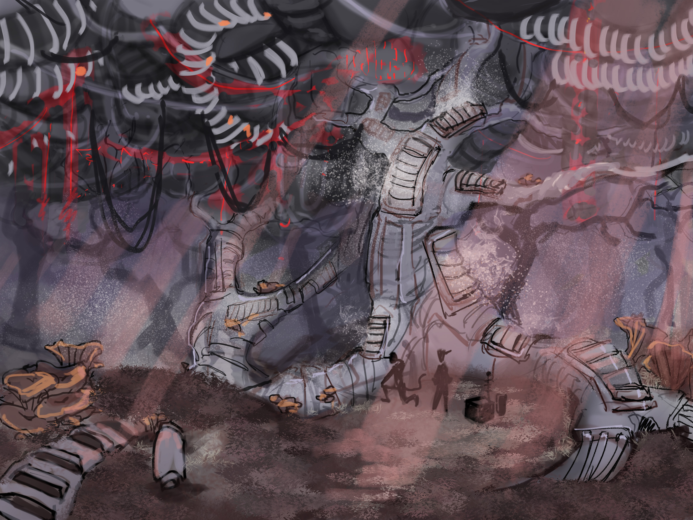

These jungles are made up of tree like structures, except instead of branches and leaves they have a mass of intertangled brain-like Cables. Often shortened to just "The BrainFrames".
The BrainFrames function as an internet for the world. They have the ability to grow and self-heal to a limited extent.
The jungles are deep, tangled webs that most don't venture into. Occasionally when there is a severe outage "Network Maintenance Crew" are dispatched into the forest to repair the structures. Sometimes they go missing. For this reason, assignment as "Network Maintenance Crew" is inflicted by the authorities only on those who have committed serious crimes.
There are rumours that a cult of invertebrate robots exist in the jungle and intercept messages on the network.
Flora and Fauna:
The BrainFrames are mostly inhabited by mulch and fungus due to the very limited light. These thrive on the high warmth and humidity from the "trees" themselves which put out warm steam.
♪♫ Ambience ♫♪